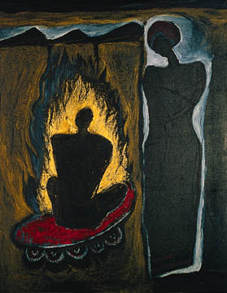

پذيرش > مقالات > تاریخ شفاهی > بیست سال در خواب و بیداری


 بیست سال در خواب و بیداری بیست سال در خواب و بیداری
8 دی 1387 - نرگس طيبات - نسخه قابل چاپ
حیاط پر از برگهای زرد و خشک درخت همسایه بود. صدای خرد شدن برگها را زیر چرخهای دوچرخه بچه ها می شنیدم. چشمانم میان نگاه کردن به بچه ها و درب کوچه سرگردان بود. هوا داشت تاریک می شد. زنگ زدند. مادرم چادر به سر به طرف در دوید که من نروم. با تکه کاغذی برگشت. خواندم: فردا صبح تحویل وسایل، میدان خراسان. انتظار تمام شد.
چشمانم را بستم و لباسها را بو کردم. بعضی از آنها بوی نا می داد. شلوار و پیراهن آبی نو بود. خب تازه اسفند بود که خریدمشان و برای عید برده بودم. باید نو می ماند. در تاکسی و اتوبوس که نپوشیده بود که شلوارش زانو بیندازد و پشت پیراهن اش از تکیه بر صندلی عرق کند و کثیف شود. پوشیده بود و راست آمده بود پشت شیشه. آلبوم عکس بچه ها را نگاه می کردم. بعضی از بچه ها را نمی شناختم. کیف و مسواک و ... ساعتش نبود. وسایل را توی ساک برزنتی ریختم و در کمد گذاشتم. سر پله نشستم و هوای سرد را فرو دادم.
بعد تصمیم گرفتم بچه ها را به پارک شهر ببرم، مادرم جلو آمد، نرو . فامیل ها می آن دیدنت. سه تایی رفتیم من و بچه ها. آنقدر بازی کردیم که خسته برگشتیم. سرم را به دیوار تکیه دادم. پنج ساله و سه ساله. آه که چقدر راه مانده و کار.
چهارده ساله و دوازده ساله اند. جلوی مشاور حقوقی می ایستم. می گویم برای گرفتن گواهی سن رشد حضانت آمدم.
گواهی سن رشد برای چه؟ پدرش کارمند بود؟ نه. مستمری بگیر هستی؟ نه. ارث و میراثی دارد که باید بچه ها به دادگاه بروند؟ نه. حضانت برای چه؟
خب مگر نباید بگیرم؟
با خانواده شوهرت مشکلی داری؟ نه. خیلی هم رابطه مان خوب است. بچه ها را می خواهند بگیرند؟ نه. مگر بچه ها مادر ندارند که آنها بچه هایم را بگیرند و بزرگ کنند.
خب پس چی؟
هیچی.
مگر طلب کمکی کرده ای که می ترسی بچه هایت را بگیرند. نه، مگه من خودم چلاقم، خودم دارم کار می کنم بچه هایم را بزرگ می کنم. آنها دوسال یکبار پنجاه کیلو برنج برایم می آورند.
همین؟
بله همین.
کمک مالی چه؟
نه، هیچوقت.
پس حضانت برای چی میخوای، حوصله داری خانم.
بیرون آمدم. ارث و میراث؟ وقتی رفت بیست و پنج هزار تومان در خانه پول داشتیم همین و بس که آن هم خرج اجاره خانه شد و جمع کردن وسایل و کوچ به خانه پدری.
امروز مرخصی گرفتم دارم میروم خرید. راستی چند سال است برایم برنج نفرستاده اند؟ یادم نمی آید. همیشه میگفت: ببین تا وقتی من توی زندان هستم، خانواده ام به تو سر میزنند اگر من بروم دیگر سراغت را هم نمی گیرند، برو سریع دنبال کار دائم.
چشم و رفتم.

از خستگی روی پله حیاط نشستم منتظر تا ساعت دو که بچه ها از مدرسه بیایند. داشتم چرت میزدم که با صدای تلفن پریدم. مامان ما میدان آزادی هستیم، تا نیم ساعت دیگه می رسیم. نفس راحتی کشیدم.
آمدند. خوش گذشت؟
کوله پشتی شان را که گذاشتند زمین شروع کردند: مامان جان چند بار ما باید به جلسه خانوادگی برویم؟ چقدر باید بشنویم که پدرمان زودتر از پدربزرگ مرده و از نظر قانونی به ما ارثی تعلق نمی گیرد؟ ولی چون آقاجان وصیت کرده که ما هم مثل همه ارث می بریم، عمه های عزیز ما می خواهند به وظیفه شان عمل کنند ولی خب اشکال قانونی هم هست چون وصیت نامه آقاجان کتبی نیست. چون همه باید نامه جمعی بنویسند و این مسئله را تأیید کنند. چون شاید یک نفر نخواهد ما مثل بقیه ارث ببریم. چون .... چون .... چون ... بابا نخواستیم، تا حالا که نه گرسنه ماندیم و نه درمانده.
پس هروقت دلتان تنگ شد بروید و خانواده تان را ببینید ولی نه برای جلسه خانوادگی.
بیست و چهار ساله و بیست و دو ساله اند. هزینه کلاس تقویتی، کلاس کنکور، دانشگاه آزاد، دانشگاه غیرانتفاعی، لباس، شنا، تفریح و ... هیچ وقت پرسیدند؟ نه، فقط موقع کنکور زنگ می زدند بچه ها قبول شدند؟ کجا؟ چه رشته ای؟
بچه ها می گویند پدرمان جزو افتخارات خانوادگی است ما هم باید این افتخار را حفظ کنیم البته اگر دکتر و مهندس می شدیم، به غیر از این قبول نیست. با هم می خندند. مامان، راستی اگه زمین دادند چه کار کنیم؟ بفروشیم یا ویلا بسازیم؟ میتونیم بریم مسافرت خارج کشور. نه اصلا برای مامان یه دفتر کار میخریم. آپارتمان که بهتره از شر اسباب کشی سالانه راحت میشیم. و هردو می زنند زیر خنده.
چشمانم را می بندم، زمانی که سه تایی به پارک می رفتیم، سه بار به دیدن فیلم گلنار، به کتابفروشی های خیابان انقلاب، کلاس نقاشی، کلاس رقص، دارآباد و آب بازی، خوردن ساندویچ کالباس و بندری، و هنوز هم گاهگاهی می رویم با همان لذت گذشته.
بدون گواهی سن رشد، بدون برگه حضانت و فعلا بدون نیاز به قیمومیت. می روم که بخوابم. مامان خسته ای؟ نه مادر، شب بخیر.
چشمانم را می بندم. خسته ام. خسته ی سالهای دویدن برای اثبات خودم که می توانم مانند هزاران زن دیگر که به دور از هیاهو خواستند و توانستند که بروند و درجا نزنند.
به ساعت نگاه می کنم. روی عدد نه و بیست و دو دقیقه شب مانده و شیشه اش خش برداشته است. بیست سال است که خوابیده و بیست سال است که من سعی می کنم بیدار باشم.
ارسال به
بالاترین
،
توییتر
،
فریندفید
،
فیسبوک
در همين بخش :
 8 مارس روزی که نمی توان از ما دریغ کرد 8 مارس روزی که نمی توان از ما دریغ کرد
با طلاق توافقی از حقارت و کتک و فحش رها شدم /گزارشی از دادگاه محلاتی: مریم مالک
تجمع مادران عزادار در رشت
تغییر ممکن است/ جلوه جواهری(26 روز پس از بازداشت کاوه مظفری)
گامهایی که با تزلزل نا آشنایند/ گرامی داشت چهلم ندا در رشت
ديگر بخش ها :
طرح یک میلیون امضا
|
مقالات
|
سایت نوشته ها
|
اخبار
|
گزارش كمپين
|
گفت و گو
|
علیه سکوت
|
كوچه به كوچه
|
نامه های شما
|
گزارش ویژه
|
گفتگو با اعضا
|
ویژه سالگرد کمپین
|
تصویر برابری
|
دل آرام علی
|
تریبون
|
مقالات
|
تاریخ شفاهی
|
خارج از چارچوب
|
کتابخانه
|
درباره کمپین
|
کمپین در شهرها
|
کمپین در بند
|
صدای تغییر
|
ویژه 22 خرداد
|
لایحه حمایت از خانواده
|
گالری
|
عشا مومنی
|
امیر یعقوبعلی
|
خدیجه مقدم
|
راحله عسگری زاده و نسیم خسروی
|
پروین اردلان،جلوه جواهری، مریم حسین خواه، ناهید کشاورز
|
زینب پیغمبرزاده
|
سعیده امین، سارا ایمانیان، محبوبه حسین زاده، ناهید کشاورز و همایون نامی
|
احترام شادفر
|
نسیم سرابندی زاده،فاطمه دهدشتی
|
وبلاگ مهمان
|
پرونده خرم آباد
|
دستگیری ها
|
مریم مالک
|
پرستو اللهیاری
|
مهرنوش اعتمادی
|
سمیه رشیدی
|
Other Languages
|
همراهان
|
«فراخوان کمپین ده روز با بهاره هدایت»
| English
|